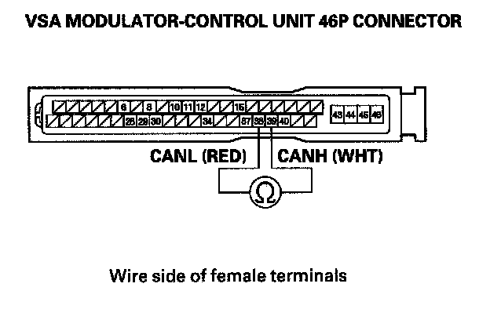

Fuel and Emissions
DTC U0122: F-CAN Malfunction (PCM-VSA Modulator-Control Unit)NOTE:
- Before you troubleshoot, record all freeze data and any on-board snapshot, and review the general troubleshooting information.
- If DTC U0028 is stored at the same time as DTC U0122, troubleshoot DTC U0028 first, then recheck forDTCU0122.
1. Turn the ignition switch ON (II).
2. Clear the DTC with the HDS.
3. Check for Temporary DTCs or DTCs with the HDS.
Is DTC U0122 indicated?
YES - Go to step 4.
NO - Intermittent failure, the system is OK at this time. Check for poor connections or loose terminals at the gauge control module, the VSA modulator-control unit, and the PCM.
4. Check for DTCs in the DTCs MENU with the HDS.
Is VSA DTC 86 indicated?
YES - Go to step 5.
NO - Go to step 8.
5. Turn the ignition switch OFF.
6. Disconnect the VSA modulator-control unit 46P connector.

7. Check for continuity between VSA modulator-control unit 46P connector terminals No. 38* and No. 39.
Is there continuity?
YES - Substitute a known-good VSA modulator-control unit , then go to step 15 and recheck. If DTC U0122 is not indicated, replace the original VSA modulator-control unit, then go to step 15.
NO - Repair open in the wire between the VSA modulator-control unit (No. 39 (No. 38)*) and the PCM (A48 (A49)*), then go to step 15.
*:CANL Line
8. Check for a poor connection at the VSA modulator-control unit 46P connector.
Are the connections OK?
YES - Go to step 9.
NO - Repair the connection(s), then go to step 15.
9. Turn the ignition switch OFF.
10. Disconnect the VSA modulator-control unit 46P connector.
11. Turn the ignition switch ON (II).
12. Measure voltage between VSA modulator-control unit 46P connector terminal No. 40 and body ground.
Is there battery voltage?
YES - Go to step 13.
NO - Check the No. 29 VSA (10 A) fuse in the under-dash fuse/relay box. If the fuse is OK, repair open in the wire between the No. 29 VSA (10 A) fuse and the VSA modulator-control unit, then go to step 15.
13. Turn the ignition switch OFF.
14. Check for continuity between VSA modulator-control unit 46P connector terminals No. 43 and No. 46 and body ground.
Is there continuity?
YES - Substitute a known-good VSA modulator-control unit, then go to step 15 and recheck. If DTC U0122 is not indicated, replace the original VSA modulator-control unit, then go to step 15.
NO - Repair open in the wire between the VSA modulator-control unit and body ground (G303), then go to step 15.
15. Reconnect the VSA modulator-control unit 46P connector.
16. Turn the ignition switch ON (II).
17. Reset the PCM with the HDS.
18. Do the PCM idle learn procedure.
19. Check for Temporary DTCs or DTCs in the DTCs MENU with the HDS.
Is DTC U0122 indicated?
YES - Check for poor connections or loose terminals at the gauge control module, the VSA modulator-control unit, and the PCM, then go to step 1.
NO - Troubleshooting is complete. If any other Temporary DTCs or DTCs are indicated, go to the indicated DTCs troubleshooting.